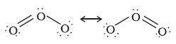

7.13 Ozone
Ozone is an allotropic form of oxygen. It is too reactive to remain for long in the atmosphere at sea level. At a heigh of about 20 kilometres, it is formed from atmospheric oxygen in the presence of sunlight. This ozone layer protects the earth’s surface from an excessive concentration of ultraviolet (UV) radiations.
Preparation
When a slow dry stream of oxygen is passed through a silent electrical discharge, conversion of oxygen to ozone (10%) occurs. The product is known as ozonised oxygen.
3O2 → 2O3 ∆H (298 K) = +142 kJ mol–1
Since the formation of ozone from oxygen is an endothermic process, it is necessary to use a silent electrical discharge in its preparation to prevent its decomposition.
If concentrations of ozone greater than 10 per cent are required, a battery of ozonisers can be used, and pure ozone (b.p. 385 K) can be condensed in a vessel surrounded by liquid oxygen.
Properties
Pure ozone is a pale blue gas, dark blue liquid and violet-black solid. Ozone has a characteristic smell and in small concentrations it is harmless. However, if the concentration rises above about 100 parts per million, breathing becomes uncomfortable resulting in headache and nausea.
Ozone is thermodynamically unstable with respect to oxygen since its decomposition into oxygen results in the liberation of heat (∆H is negative) and an increase in entropy (∆S is positive). These two effects reinforce each other, resulting in large negative Gibbs energy change (∆G) for its conversion into oxygen. It is not really surprising, therefore, high concentrations of ozone can be dangerously explosive.
Due to the ease with which it liberates atoms of nascent oxygen (O3 → O2 + O), it acts as a powerful oxidising agent. For example, it oxidises lead sulphide to lead sulphate and iodide ions to iodine.
PbS(s) + 4O3(g) → PbSO4(s) + 4O2(g)
2I–(aq) + H2O(l) + O3(g) → 2OH–(aq) + I2(s) + O2(g)
When ozone reacts with an excess of potassium iodide solution buffered with a borate buffer (pH 9.2), iodine is liberated which can be titrated against a standard solution of sodium thiosulphate. This is a quantitative method for estimating O3 gas.
Experiments have shown that nitrogen oxides (particularly nitric oxide) combine very rapidly with ozone and there is, thus, the possibility that nitrogen oxides emitted from the exhaust systems of supersonic jet aeroplanes might be slowly depleting the concentration of the ozone layer in the upper atmosphere.
Another threat to this ozone layer is probably posed by the use of freons which are used in aerosol sprays and as refrigerants.
The two oxygen-oxygen bond lengths in the ozone molecule are identical (128 pm) and the molecule is angular as expected with a bond angle of about 117o. It is a resonance hybrid of two main forms:

Uses: It is used as a germicide, disinfectant and for sterilising water. It is also used for bleaching oils, ivory, flour, starch, etc. It acts as an oxidising agent in the manufacture of potassium permanganate.